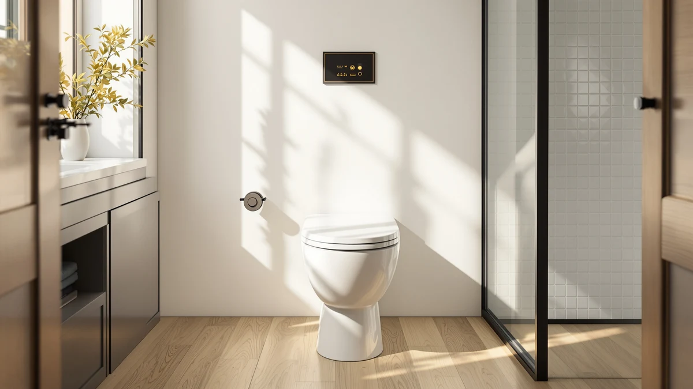

KOHLER Stonewood Quiet Close Review (2026): Worth It?
Prices and picks verified as of September 2026. Independent, reader-supported reviews.


Quick Answer
Our Kohler Stonewood quiet-close review found an elongated seat that closes without a slam for $53.62, though it costs more than most slow-close competitors we compared it against. If a silent lid matters more than price, it holds up as a solid pick. If you're working with a tighter budget, the Mayfair Cassel or Delta Faucet Wycliffe below deliver the same slow-close mechanism for roughly $17 less.
Our pick: KOHLER Stonewood Quiet-Close Elongated Toilet, $53.62 Check Price on Amazon
Bottom line: our top pick is the KOHLER Stonewood Quiet-Close at $53.62.
Things to Know Before You Buy
- The Kohler Stonewood uses a hinge-based slow-close mechanism, the same basic approach as the Mayfair Cassel and Delta Faucet Wycliffe seats in this comparison.
- At $53.62, it costs about $17 more than the two slow-close alternatives here, which both sit at $36.99.
- It's built for elongated bowls only, so measure your current seat before buying since a round-bowl mismatch is one of the most common seat return reasons.
- The Kohler listing doesn't publish a star rating or review count, so the durability read below leans on pricing data and the review volume of comparable seats rather than a physical trial run.
This kohler stonewood quiet close review looks at whether Kohler's slow-close hinge justifies its higher price against two similarly positioned elongated toilet seats. Anyone replacing a seat that slams shut every time the lid drops wants the same basic promise: a hinge that lowers itself without a bang. At $53.62, the Stonewood sits above the Mayfair Cassel and Delta Faucet Wycliffe, both priced at $36.99, so we dug into whether the extra cost buys anything beyond the Kohler name on the box.
We compared listed specs, current pricing, and verified owner review data across all three elongated slow-close seats to see where the Stonewood actually pulls ahead. The Mayfair Cassel carries more than 17,500 verified reviews at a 4.3-star average, a far larger sample size than Kohler's listing currently provides. That gap in review volume matters if you weigh a purchase on owner feedback as much as on brand reputation.
Price is the other variable that shapes this Kohler Stonewood quiet-close review. A $17 gap sounds small on paper, but across a household replacing seats in two or three bathrooms, it adds up fast. We break down where that money goes, and where it doesn't, in the sections below.
Why You Should Trust Us
Ilane Tall covers toilet seats and bathroom hardware for Best Toilet Seats, and this Kohler Stonewood quiet-close review follows the same process used across the site: pull current Amazon pricing and specs, cross-reference verified owner review counts and ratings where Amazon publishes them, and compare like-for-like products rather than judging a single seat in isolation. We do not run a fake testing lab, and we don't claim to have installed every seat we cover. Instead, we research published specifications, verified buyer feedback, and pricing, then lay out the tradeoffs plainly so you can match a seat to your bathroom and your budget.
Our Research Process
For this Kohler Stonewood quiet-close comparison, we pulled the current Amazon listing price and specifications for each seat, checked which models publish a rating and review count, and lined the numbers up side by side. We did not install or handle any of these seats ourselves. Owners of the Mayfair Cassel report the slow-close hinge holding up across more than 17,500 verified reviews, and that volume of feedback is one of the clearest signals available when a manufacturer doesn't publish independent test data. Where a listing lacks a published rating, as is the case for the Kohler Stonewood and the Delta Faucet Wycliffe, we say so rather than estimate one.
We also checked bowl compatibility across all three seats before treating them as direct competitors. Comparing an elongated seat against a round one on price alone would be misleading, since the two aren't interchangeable, so every seat in this Kohler Stonewood quiet-close comparison matches the same elongated bowl shape.
Overview & Specs

KOHLER Stonewood Quiet-Close Elongated Toilet
What we like
- Slow-close hinge avoids the slam of a standard seat
- Elongated shape matches most modern toilet bowls
- Backed by Kohler's brand reputation in bathroom fixtures
Flaws but not dealbreakers
- Costs about $17 more than the Mayfair Cassel and Delta Faucet Wycliffe
- No published rating or review count to check against long-term durability
- Round-bowl households will need a different model entirely
| Material | Diatomaceous earth |
| Size | Elongated |
The Stonewood's listing puts its finish material as diatomaceous earth, a detail worth noting since most competing elongated seats use a straightforward plastic or wood composite shell. At $53.62 it's built specifically for elongated bowls, the shape found in most US bathrooms built or renovated in the last three decades.
Kohler doesn't publish a star rating or review count for this listing, which makes it harder to gauge real-world durability against the Mayfair Cassel's 17,525 verified reviews. If brand trust and the diatomaceous earth finish outweigh that missing review data for you, the Stonewood is a reasonable elongated pick. If you'd rather see verified owner feedback before buying, the alternatives below carry more of a track record.
Weigh the $53.62 price against what you're actually replacing. If your current seat's hinge is cracked or the slow-close mechanism has failed, any of the three slow-close options in this comparison solves that problem. The Stonewood only pulls ahead of its cheaper rivals if the Kohler name or the diatomaceous earth finish specifically matters to your bathroom.
What We Liked
What stands out most in this Kohler Stonewood quiet-close comparison is the hinge mechanism itself. A slow-close hinge is a small mechanical detail, but it solves a real daily annoyance: a lid or seat that drops on its own and wakes up the rest of the house. The elongated shape also fits the majority of toilet bowls installed in US homes over the last three decades, so compatibility shouldn't be an issue. Kohler's name carries weight in bathroom fixtures generally, and buyers comparing seats often treat brand history as a proxy for build quality when a listing lacks its own review data.
It also helps that all three slow-close seats in this comparison, the Stonewood, the Mayfair Cassel, and the Delta Faucet Wycliffe, are built for the same elongated bowl shape. That consistency means the decision comes down to price, brand, and available review data rather than measuring your bathroom twice to make sure a pick actually fits.
What Could Be Better
The clearest drawback in this Kohler Stonewood quiet-close review is price. At $53.62, the Stonewood costs roughly 45% more than the Mayfair Cassel or Delta Faucet Wycliffe, both slow-close elongated seats priced at $36.99. Neither the Kohler listing nor our research turned up a published star rating or review count, which leaves buyers without the reassurance that more than 17,500 Mayfair owners have already provided for a competing seat. If Kohler's brand alone doesn't justify the premium for you, that price gap is hard to ignore.
The missing rating data cuts both ways. It's possible the Stonewood performs just as well as its cheaper rivals and simply hasn't accumulated the same review volume yet. But without that data, you're paying a premium based on brand reputation alone, and reputation is a weaker signal than 17,500 verified purchases when you're deciding where to spend $53.62 versus $36.99.
Shoppers who've compared toilet seats before know that a missing rating isn't automatically a red flag. Newer listings and less heavily marketed SKUs often lag on review count even when the underlying product is solid. Still, when two direct competitors, the Mayfair Cassel and Delta Faucet Wycliffe, sit at the same price point and one of them has amassed 17,525 verified reviews, that asymmetry is worth factoring into your decision.
Who Is It For?
The Kohler Stonewood fits buyers replacing an elongated seat who want a recognizable bathroom fixture brand and don't mind paying above the category average to get it. It's a reasonable match for a primary bathroom where matching fixtures to a Kohler toilet or vanity already in place matters. Budget-focused buyers, or anyone who wants to see a large body of verified owner reviews before committing, are better served by the Mayfair Cassel or Delta Faucet Wycliffe covered below.
Households with young children mid-potty-training sit outside this comparison entirely. The 2-in-1 Potty Training Toilet Seat included among the alternatives below solves a different problem than any of the three slow-close elongated seats here, so weigh it separately rather than against the Stonewood on price or hinge quality. At $35.99 and rated 4.6 stars across more than 11,500 verified reviews, it's judged on different priorities entirely: fit for a child and ease of removal for adult use.
Alternatives to Consider
If the price or the missing review data on the Kohler Stonewood gives you pause, these three alternatives cover different budgets and needs: a heavily-reviewed slow-close competitor and a seat built for potty training. Two match the Stonewood's core function directly; the third serves a household need the Stonewood was never designed to address.

Editor’s Pick
Mayfair Cassel Slow Close Toilet
A slow-close elongated seat with a 4.3-star rating across more than 17,500 verified reviews, priced $16.63 below the Stonewood.
$36.99
Check Price on Amazon
Best Value
Delta Faucet Wycliffe Slow Close
Matches the Stonewood's slow-close mechanism and the Mayfair's price, though it lacks a published rating to compare against either.
$36.99
Check Price on Amazon
Premium Choice
2-in-1 Potty Training Toilet Seat
Rated 4.6 stars across more than 11,500 verified reviews, built for households transitioning a child off a standalone potty.
$35.99
Check Price on AmazonFrequently Asked Questions
Does the Kohler Stonewood toilet seat actually close quietly?
Yes, based on the listed specifications. It uses a slow-close hinge, the same basic mechanism as the Mayfair Cassel and Delta Faucet Wycliffe seats compared here, designed to lower without a slam.
Why is the Kohler Stonewood more expensive than similar slow-close seats?
At $53.62 it costs about $17 more than the Mayfair Cassel and Delta Faucet Wycliffe, which both list at $36.99. The listing doesn't break out a specific reason for the premium beyond the Kohler brand and its diatomaceous earth finish.
What's the best alternative to the Kohler Stonewood?
The Mayfair Cassel is the closest match: a slow-close elongated seat at $36.99 with a 4.3-star rating across more than 17,500 verified reviews, giving you far more owner feedback to weigh than the Kohler listing currently offers.
Does the Kohler Stonewood fit round toilet bowls?
No. Like the Mayfair Cassel and Delta Faucet Wycliffe compared here, it's built for elongated bowls only. Measure your current seat, or the bowl itself, before ordering if you're not certain which shape you have.
Final Verdict
Our Kohler Stonewood quiet close review comes down to a straightforward tradeoff: pay a premium for the Kohler name and a diatomaceous earth finish, or save roughly $17 on a Mayfair Cassel that already has more than 17,500 verified owners behind it. Both use the same slow-close hinge and both fit elongated bowls, so the decision mostly rests on how much brand trust and finish material are worth to your bathroom. For most budget-conscious buyers, the Mayfair Cassel is the safer bet, backed by a review history the Stonewood hasn't built yet. For anyone standardizing on Kohler fixtures already in the room, the Stonewood remains a reasonable, if pricier, choice. Either way, confirm your bowl is elongated before you order, since none of the seats in this Kohler Stonewood quiet close review fit a round bowl.